5 Data Frames and Plotting
In this chapter, we will delve into the world of Data Frames and Plotting. These are crucial concepts in Computational Mathematics that will enable us to handle and visualize data effectively.
5.0.0.1 A note for R users.
Before we start, we will need to import a very important library for writing modern R code: tidyverse.
As mentioned earlier, R has changed a lot over the recent years, including more and more tools for functional programming, fast data manipulation, exploration, analysis and plotting.
The tidyverse includes a wide range of packages that improve R for scientific computing.
We have already seen one of those, in the past week: the purrr library.
However, there’s much more, other of the core packages in the tidyverse include ggplot2 for data visualization, dplyr for data manipulation, and tidyr for data cleaning.
By using these packages together, you can efficiently import, clean, manipulate, visualize, and analyze your data in a consistent and reproducible manner.
This makes the tidyverse a powerful tool for modern scientific computing, and for this reason I heavily encourage you to use its functions and packages for the rest of this entire module and for your future analyses.
To install the tidyverse (already installed on University Machines), run:
install.packages("tidyverse")And to load the package:
library(tidyverse)You only need to install a package once.
But you have to load all the packages you want to use at the start of every session.
As a suggestion, make sure the library(tidyverse) command sits at the top of your script from now on.
In the previous chapters, we learned how to truly extract the power of functions.
Well, one of the things introduced in purrr, and that goes really well with the tidyverse package, is the pipe operator.
This operator allows you to pass the output of one function to another function as the first argument.
This translates the mathematical function composition in programming, e.g. \((f_1 \circ f_2)(x)\).
This operator is written as |> and is used to express a sequence of multiple operations in a more readable and intuitive way.
In code, the equivalent of our expression would be x |> f1 |> f2.
For example, if we want to compute the natural logarithm of the sum of the first 10 natural numbers, \(\ln(1 + 2+ 3+ ... + 10)\), this is:
x <- 1:10 # create a vector with the first 10 integers
x |> sum() |> log()## [1] 4.007333In this example, we start with a vector x containing the numbers from 1 to 10.
We then use the pipe operator to pass this vector to the sum() function, which calculates the sum of all elements in the vector.
The result of this operation (55) is then passed to the log() function, which calculates the natural logarithm of the input.
This code is equivalent to writing:
x <- 1:10
log(sum(x))## [1] 4.007333As you can see, using the pipe operator allows us to express the sequence of operations in a more readable and intuitive way. It can be particularly useful when working with complex data transformations, as it allows you to write code that closely matches the logical sequence of operations you have in mind.
Remember that the pipe takes the output on its left and passes it as the first argument to the function on its right.
For example, the function log takes as first argument the number and as second argument the base of our logarithm.
If we want to compute the base-10 logarithm instead of the natural logarithm, we can do this by changing the second base argument after the piping:
x <- 1:10
x |> sum() |> log(base = 10)## [1] 1.740363This code is equivalent to writing:
x <- 1:10
log(sum(x), base = 10)## [1] 1.7403635.0.0.2 A note for Python users
For this week, we will continue to use the pandas and numpy packages, which, as we learned, are fundamental tools for data manipulation and numerical computations in Python.
import pandas as pd
import numpy as npHowever, we will also introduce a new package: plotnine.
This package is not included in the standard Python library, so you’ll need to install it.
You can do this using pip, Python’s package installer.
To do so, type the following command:
!python -m pip install plotnineYou only need to install this package once, and then you will be able to load it as you did with numpy or pandas.
plotnine is an implementation of a grammar of graphics in Python, based on ggplot2 in R.
ggplot2 is one of the most used libraries for data visualization in R, and plotnine brings its powerful data visualization capabilities to Python.
It’s designed to work seamlessly with pandas data frames, making it extremely convenient for creating complex and beautiful statistical plots.
Once you’ve installed plotnine, you can import it in your Python scripts using the following command:
from plotnine import *With plotnine, you’ll be able to create a wide variety of plots and visualizations, and gain deeper insights from your data.
5.1 Data Frames
A data frame is a table-like data structure available in languages like R and Python. It is similar to a spreadsheet or SQL table, or a dictionary of Series objects in Python. Data frames are generally used for statistical analysis in R and Python programming.
In a data frame, the columns are named vectors, each containing a particular type of data (numeric, string, date, time). Unlike a matrix where every element must have the same data type, a data frame allows each column to have a different data type. This makes data frames more flexible for data analysis tasks where we often deal with data that have heterogeneous types. The columns of a data frame are often referred to as variables or features in statistics. In the context of mathematics or physics, these could be considered as parameters or attributes. The rows of the data frame correspond to a single observation across these variables.
5.1.1 Constructing and Accessing Data Frames
Let’s start by constructing a data frame. We’ll use a dataset of different types of non-dairy milks, with their respective nutritional contents:
| Milk Type | Calories | Protein (g) | Fiber (g) | Carbohydrates (g) | Sugars (g) | Fats (g) |
|---|---|---|---|---|---|---|
| Almond | 60 | 1 | 1 | 8 | 7 | 2.5 |
| Soy | 100 | 7 | 2 | 10 | NA | 4 |
| Oat | 120 | 3 | NA | 20 | 19 | 2.5 |
| Rice | 130 | 1 | NA | 25 | NA | 2.5 |
In this dataset, the first column will be a character column, to indicate the type of the milk, whilst the others will be numericals.
Furthemore, the “Fiber” and “Sugars” columns for Soy, Oat and Rice milk have NA values, indicating missing or not applicable data.
This is often the case in real data, where usually information will not be available to us in the best way as possible.
In this case, R and python will just tell us that we have a “Not Applicable (NA)” or “Not a Number (NaN)” unknown value.
Now, let’s see how we can create this data frame in R and Python:
R
# Creating a data frame in R
milk_df <- tibble(
Milk_Type = c("Almond", "Soy", "Oat", "Rice"),
Calories = c(60, 100, 120, 130),
Protein = c(1, 7, 3, 1),
Fiber = c(1, 2, NA, NA),
Carbohydrates = c(8, 10, 20, 25),
Sugars = c(7, NA, 19, NA),
Fats = c(2.5, 4, 2.5, 2.5)
)
print(milk_df)## # A tibble: 4 × 7
## Milk_Type Calories Protein Fiber Carbohydrates Sugars
## <chr> <dbl> <dbl> <dbl> <dbl> <dbl>
## 1 Almond 60 1 1 8 7
## 2 Soy 100 7 2 10 NA
## 3 Oat 120 3 NA 20 19
## 4 Rice 130 1 NA 25 NA
## # ℹ 1 more variable: Fats <dbl>python
# Creating a data frame in Python
data = {
'Milk_Type': ['Almond', 'Soy', 'Oat', 'Rice'],
'Calories': [60, 100, 120, 130],
'Protein': [1, 7, 3, 1],
'Fiber': [1, 2, np.nan, np.nan],
'Carbohydrates': [8, 10, 20, 25],
'Sugars': [7, np.nan, 19, np.nan],
'Fats': [2.5, 4, 2.5, 2.5]
}
milk_df = pd.DataFrame(data)
print(milk_df)## Milk_Type Calories Protein Fiber Carbohydrates Sugars Fats
## 0 Almond 60 1 1.0 8 7.0 2.5
## 1 Soy 100 7 2.0 10 NaN 4.0
## 2 Oat 120 3 NaN 20 19.0 2.5
## 3 Rice 130 1 NaN 25 NaN 2.5Accessing Variables To access individual variables (columns) of the data frame, we can use the $ operator in R and the [] operator in Python:
R
# Accessing the 'Calories' column in R
# way 1
milk_df["Calories"]## # A tibble: 4 × 1
## Calories
## <dbl>
## 1 60
## 2 100
## 3 120
## 4 130# way 2
milk_df$Calories## [1] 60 100 120 130python
# Accessing the 'Calories' column in Python
# way 1
milk_df['Calories']## 0 60
## 1 100
## 2 120
## 3 130
## Name: Calories, dtype: int64# way 2
milk_df.Calories## 0 60
## 1 100
## 2 120
## 3 130
## Name: Calories, dtype: int64This will return the relative column.
NOTE for R users. In R, we have two different behaviours if we use df["COLNAME"] compared to df$COLNAME. In the first case, a subset of our data frame is returned (and the class is mantained), in the second case, we return the column as a vector (without the column title!). Additionally, we can use the select() function from the tidyverse package to select columns.
# Using the select() function in R
milk_df |> select(Calories)## # A tibble: 4 × 1
## Calories
## <dbl>
## 1 60
## 2 100
## 3 120
## 4 130Recall that the pipe operator (|>) is used to chain operations together, so it will take whatever we have at the left, and use it as a first argument to the function to the right.
The above R code is equivalent to select(milk_df, Calories).
Note, select will return the column as a subset of a data frame, and is equivalent to the [""] notation.
Sometimes this can be better, as you might not want to change the type of your objects inadvertently during execution.
Accessing multiple columns. To access multiple variables at the same time, we can pass a vector of variable names:
R
# Accessing the 'Calories' and 'Protein' columns in R and storing it
# in a new variable
calories_protein <- milk_df |> select(Calories, Protein)
# alternative
# calories_protein <- milk_df[c("Calories", "Protein")]
calories_protein## # A tibble: 4 × 2
## Calories Protein
## <dbl> <dbl>
## 1 60 1
## 2 100 7
## 3 120 3
## 4 130 1python
# Accessing the 'Calories' and 'Protein' columns in Python and storing it
# in a new variable
calories_protein = milk_df[['Calories', 'Protein']]
calories_protein## Calories Protein
## 0 60 1
## 1 100 7
## 2 120 3
## 3 130 1Note that once we access (and store, as in this second example) a subset of a data frame, we get out another data frame. Note also that the $ (in R) and . (in Python) cannot access multiple columns.
Accessing rows. To access individual rows in the data frames, we can use indexing. Similarly to vectors, to access multiple rows at the same time, we can pass a vector of row indices:
R
# Accessing the first row in R
milk_df[1, ]## # A tibble: 1 × 7
## Milk_Type Calories Protein Fiber Carbohydrates Sugars
## <chr> <dbl> <dbl> <dbl> <dbl> <dbl>
## 1 Almond 60 1 1 8 7
## # ℹ 1 more variable: Fats <dbl># Accessing the first and second rows in R
milk_df[1:2, ]## # A tibble: 2 × 7
## Milk_Type Calories Protein Fiber Carbohydrates Sugars
## <chr> <dbl> <dbl> <dbl> <dbl> <dbl>
## 1 Almond 60 1 1 8 7
## 2 Soy 100 7 2 10 NA
## # ℹ 1 more variable: Fats <dbl>python
# Accessing the first row in Python
milk_df.iloc[0]## Milk_Type Almond
## Calories 60
## Protein 1
## Fiber 1.0
## Carbohydrates 8
## Sugars 7.0
## Fats 2.5
## Name: 0, dtype: object# Accessing the first and second rows in Python
milk_df.iloc[0:2]## Milk_Type Calories Protein Fiber Carbohydrates Sugars Fats
## 0 Almond 60 1 1.0 8 7.0 2.5
## 1 Soy 100 7 2.0 10 NaN 4.0In R, when we use [1:2, ] on a data frame, we are working with a two-dimensional object.
The 1:2 represents the row indices that we want to select, and the empty space after the comma indicates that we want to select all columns.
So, [1:2, ] will select the first two rows and all columns of the data frame.
This is different from selecting a vector because a vector is a one-dimensional object, and we only need to specify the indices of the elements we want to select.
In Python, when we use .iloc[0:2] on a data frame, we are working with a two-dimensional object.
The 0:2 represents the row indices that we want to select, and the absence of a second argument after the comma indicates that we want to select all columns.
So, .iloc[0:2] will select the first two rows and all columns of the data frame.
This is different from selecting elements from a vector because a list is a one-dimensional object, and we only need to specify the indices of the elements we want to select.
Note also that when accessing only one row, in python, the returned element will be reshaped into a column vector.
Having said that, we can also access a subset of the data frame by specifying both rows and columns simultaneously:
R
# Accessing a subset of the data frame in R
subset_df <- milk_df[1:2, c("Milk_Type", "Calories", "Protein")]
# alternatively
# subset_df <- milk_df[1:2, 1:3]
subset_df## # A tibble: 2 × 3
## Milk_Type Calories Protein
## <chr> <dbl> <dbl>
## 1 Almond 60 1
## 2 Soy 100 7python
# Accessing a subset of the data frame in Python
subset_df = milk_df.loc[0:2, ["Milk_Type", "Calories", "Protein"]]
# alternatively
# subset_df = milk_df.iloc[0:2, [0, 1, 2]]
subset_df## Milk_Type Calories Protein
## 0 Almond 60 1
## 1 Soy 100 7
## 2 Oat 120 3NOTE for Python users: Be careful, in this second statement we used an even different function, loc.
In pandas, loc and iloc are two ways to select data from a DataFrame, called indexers.
The loc indexer is used with the actual labels of the index or columns.
On the other hand, iloc is used for indexing by integer position.
This means that you’re referring to the row or column by its position in the DataFrame (like the index in a vector), not by its label.
In summary, use loc when you want to refer to items by their label and iloc when you want to refer to them by their integer position.
Overwriting Elements We can, of course, overwrite and change elements of our data frames. For instance, the simplest thing we could do at the moment, is to fill in the missing values of our data frame for our column “Fibers”.
R
# Imputing missing values in R
# overwriting the original dataset
milk_df$Fiber[is.na(milk_df$Fiber)] <- c(1.2, 0.7)
milk_df## # A tibble: 4 × 7
## Milk_Type Calories Protein Fiber Carbohydrates Sugars
## <chr> <dbl> <dbl> <dbl> <dbl> <dbl>
## 1 Almond 60 1 1 8 7
## 2 Soy 100 7 2 10 NA
## 3 Oat 120 3 1.2 20 19
## 4 Rice 130 1 0.7 25 NA
## # ℹ 1 more variable: Fats <dbl>python
# Imputing missing values in Python
# overwriting the original dataset
milk_df.loc[np.isnan(milk_df['Fiber']), 'Fiber'] = [1.2, 0.7]
milk_df## Milk_Type Calories Protein Fiber Carbohydrates Sugars Fats
## 0 Almond 60 1 1.0 8 7.0 2.5
## 1 Soy 100 7 2.0 10 NaN 4.0
## 2 Oat 120 3 1.2 20 19.0 2.5
## 3 Rice 130 1 0.7 25 NaN 2.5Note that, to impute the missing values, we can also use the replace_na() function in R and the fillna() function in Python, but these functions will overwrite all NAs in the dataset, leaving little to no flexibility.
5.1.1.1 Accessing Information about the Data Frame
We can access various information about the data frame, such as its dimensions, number of rows, number of columns, column names, and a summary of its contents, with a lot of different functions. These will be not explained in detail, but can be useful for a lot of reasons related to exploratory analysis.
R
# Accessing information about the data frame in R
# dimensions
dim(milk_df)## [1] 4 7# number of rows and columns
nrow(milk_df)## [1] 4ncol(milk_df)## [1] 7# variable names
colnames(milk_df)## [1] "Milk_Type" "Calories" "Protein"
## [4] "Fiber" "Carbohydrates" "Sugars"
## [7] "Fats"#variable names and types
str(milk_df)## tibble [4 × 7] (S3: tbl_df/tbl/data.frame)
## $ Milk_Type : chr [1:4] "Almond" "Soy" "Oat" "Rice"
## $ Calories : num [1:4] 60 100 120 130
## $ Protein : num [1:4] 1 7 3 1
## $ Fiber : num [1:4] 1 2 1.2 0.7
## $ Carbohydrates: num [1:4] 8 10 20 25
## $ Sugars : num [1:4] 7 NA 19 NA
## $ Fats : num [1:4] 2.5 4 2.5 2.5# summary statistics
summary(milk_df)## Milk_Type Calories Protein
## Length:4 Min. : 60.0 Min. :1
## Class :character 1st Qu.: 90.0 1st Qu.:1
## Mode :character Median :110.0 Median :2
## Mean :102.5 Mean :3
## 3rd Qu.:122.5 3rd Qu.:4
## Max. :130.0 Max. :7
##
## Fiber Carbohydrates Sugars
## Min. :0.700 Min. : 8.00 Min. : 7
## 1st Qu.:0.925 1st Qu.: 9.50 1st Qu.:10
## Median :1.100 Median :15.00 Median :13
## Mean :1.225 Mean :15.75 Mean :13
## 3rd Qu.:1.400 3rd Qu.:21.25 3rd Qu.:16
## Max. :2.000 Max. :25.00 Max. :19
## NA's :2
## Fats
## Min. :2.500
## 1st Qu.:2.500
## Median :2.500
## Mean :2.875
## 3rd Qu.:2.875
## Max. :4.000
## python
# Accessing information about the data frame in Python
# dimensions
milk_df.shape## (4, 7)# number of rows and columns
len(milk_df)## 4len(milk_df.columns) # or milk_df.shape[1]## 7# variable names
milk_df.columns## Index(['Milk_Type', 'Calories', 'Protein', 'Fiber', 'Carbohydrates', 'Sugars',
## 'Fats'],
## dtype='object')# variable names and types
milk_df.info()## <class 'pandas.core.frame.DataFrame'>
## RangeIndex: 4 entries, 0 to 3
## Data columns (total 7 columns):
## # Column Non-Null Count Dtype
## --- ------ -------------- -----
## 0 Milk_Type 4 non-null object
## 1 Calories 4 non-null int64
## 2 Protein 4 non-null int64
## 3 Fiber 4 non-null float64
## 4 Carbohydrates 4 non-null int64
## 5 Sugars 2 non-null float64
## 6 Fats 4 non-null float64
## dtypes: float64(3), int64(3), object(1)
## memory usage: 356.0+ bytes# summary statistics
milk_df.describe()## Calories Protein Fiber Carbohydrates Sugars Fats
## count 4.000000 4.000000 4.000000 4.000000 2.000000 4.000
## mean 102.500000 3.000000 1.225000 15.750000 13.000000 2.875
## std 30.956959 2.828427 0.556028 8.098354 8.485281 0.750
## min 60.000000 1.000000 0.700000 8.000000 7.000000 2.500
## 25% 90.000000 1.000000 0.925000 9.500000 10.000000 2.500
## 50% 110.000000 2.000000 1.100000 15.000000 13.000000 2.500
## 75% 122.500000 4.000000 1.400000 21.250000 16.000000 2.875
## max 130.000000 7.000000 2.000000 25.000000 19.000000 4.000Based on the information above, how would you access the last 2 rows and the last 2 columns of your data frame?
5.1.2 Manipulating Data Frames
When working with data in R or Python, most of the time we need to perform some data manipulation. This could involve modifying our data frame, accessing specific parts of it that are of interest, or creating new variables based on existing ones. Fortunately, both R and Python provide a set of powerful functions for these tasks.
In R, we have bind_rows, filter, arrange, and mutate.
In Python, we have concat, query, sort_values, and assign.
We will now explore each of these functions in detail.
5.1.2.1 Adding New Rows
To add new rows (or collate two data frames together!) we can use functions bind_rows (in R) and concat (in Python).
This is formally referred to concatenating, which means to create a new data frame by attaching new rows to a data frame from a different one that shares the same columns.
R
# Creating a new data frame in R
extra_milk_df <- tibble(
Milk_Type = c("Cashew", "Hazelnut"),
Calories = c(80, 130),
Protein = c(0.7, 2),
Fiber = c(1, 2),
Carbohydrates = c(2, 8),
Sugars = c(0.5, 3),
Fats = c(3, 9)
)
# attaching new rows to our existing data frame
milk_df <- milk_df |> bind_rows(extra_milk_df)
milk_df## # A tibble: 6 × 7
## Milk_Type Calories Protein Fiber Carbohydrates Sugars
## <chr> <dbl> <dbl> <dbl> <dbl> <dbl>
## 1 Almond 60 1 1 8 7
## 2 Soy 100 7 2 10 NA
## 3 Oat 120 3 1.2 20 19
## 4 Rice 130 1 0.7 25 NA
## 5 Cashew 80 0.7 1 2 0.5
## 6 Hazelnut 130 2 2 8 3
## # ℹ 1 more variable: Fats <dbl>python
# Creating a new data frame in Python
extra_milk_df = pd.DataFrame({
'Milk_Type': ["Cashew", "Hazelnut"],
'Calories': [80, 130],
'Protein': [0.7, 2],
'Fiber': [1, 2],
'Carbohydrates': [2, 8],
'Sugars': [0.5, 3],
'Fats': [3, 9]
})
# Attaching new rows to our existing data frame
milk_df = pd.concat([milk_df, extra_milk_df], ignore_index=True)
milk_df## Milk_Type Calories Protein Fiber Carbohydrates Sugars Fats
## 0 Almond 60 1.0 1.0 8 7.0 2.5
## 1 Soy 100 7.0 2.0 10 NaN 4.0
## 2 Oat 120 3.0 1.2 20 19.0 2.5
## 3 Rice 130 1.0 0.7 25 NaN 2.5
## 4 Cashew 80 0.7 1.0 2 0.5 3.0
## 5 Hazelnut 130 2.0 2.0 8 3.0 9.0Note that in R you can use also the rbind function that we have seen in the past week.
In Python you will need to add the ignore_index=True argument, otherwise this will mess up your indexing of the data frame, and could cause unexpected results.
5.1.2.2 Adding New Columns
Adding new columns allows us to easily add new columns that are functions of existing ones.
In R, we use mutate(), and in Python, we use assign.
R
# Compute percentage of sugars over carbohydrates in R
# Then, adding the total weight of the components and computing the
# protein content
milk_df <- milk_df |> mutate(sugar_percent = (Sugars / Carbohydrates) * 100,
tot_wei = Protein + Fiber + Carbohydrates + Fats,
protein_content = Protein / tot_wei * 100)
milk_df## # A tibble: 6 × 10
## Milk_Type Calories Protein Fiber Carbohydrates Sugars Fats sugar_percent tot_wei protein_content
## <chr> <dbl> <dbl> <dbl> <dbl> <dbl> <dbl> <dbl> <dbl> <dbl>
## 1 Almond 60 1 1 8 7 2.5 87.5 12.5 8
## 2 Soy 100 7 2 10 NA 4 NA 23 30.4
## 3 Oat 120 3 1.2 20 19 2.5 95 26.7 11.2
## 4 Rice 130 1 0.7 25 NA 2.5 NA 29.2 3.42
## 5 Cashew 80 0.7 1 2 0.5 3 25 6.7 10.4
## 6 Hazelnut 130 2 2 8 3 9 37.5 21 9.52python
# Compute percentage of sugars over carbohydrates in Python
# Then, adding the total weight of the components and computing the
# protein content
milk_df = milk_df.assign(
sugar_percent = lambda df: (df.Sugars / df.Carbohydrates) * 100,
tot_wei = lambda df: df.Protein + df.Fiber + df.Carbohydrates + df.Fats,
protein_content = lambda df: df.Protein / df.tot_wei * 100
)
milk_df## Milk_Type Calories Protein Fiber Carbohydrates Sugars Fats sugar_percent tot_wei protein_content
## 0 Almond 60 1.0 1.0 8 7.0 2.5 87.5 12.5 8.000000
## 1 Soy 100 7.0 2.0 10 NaN 4.0 NaN 23.0 30.434783
## 2 Oat 120 3.0 1.2 20 19.0 2.5 95.0 26.7 11.235955
## 3 Rice 130 1.0 0.7 25 NaN 2.5 NaN 29.2 3.424658
## 4 Cashew 80 0.7 1.0 2 0.5 3.0 25.0 6.7 10.447761
## 5 Hazelnut 130 2.0 2.0 8 3.0 9.0 37.5 21.0 9.523810The advantage of using mutate and assign over directly overwriting columns is that those function allow you to reference other columns that are being created within the same call.
This makes it possible to create multiple interdependent columns in one go.
In contrast, when overwriting columns directly, you would have to create each new column one at a time, which could be less efficient and harder to read.
If we had to do the same code manually, each one at a time, this would have looked like the following:
R
### equivalent to above statement
# Compute percentage of sugars over carbohydrates in R
milk_df$sugar_percent <- (milk_df$Sugars / milk_df$Carbohydrates) * 100
# Then, adding the total weight of the components
milk_df$tot_wei <- milk_df$Protein + milk_df$Fiber + milk_df$Carbohydrates + milk_df$Fats
# Finally, computing the protein content
milk_df$protein_content = milk_df$Protein / milk_df$tot_wei * 100
milk_df## # A tibble: 6 × 10
## Milk_Type Calories Protein Fiber Carbohydrates Sugars
## <chr> <dbl> <dbl> <dbl> <dbl> <dbl>
## 1 Almond 60 1 1 8 7
## 2 Soy 100 7 2 10 NA
## 3 Oat 120 3 1.2 20 19
## 4 Rice 130 1 0.7 25 NA
## 5 Cashew 80 0.7 1 2 0.5
## 6 Hazelnut 130 2 2 8 3
## # ℹ 4 more variables: Fats <dbl>, sugar_percent <dbl>,
## # tot_wei <dbl>, protein_content <dbl>python
### equivalent to above statement
# Compute percentage of sugars over carbohydrates in Python
milk_df['sugar_percent'] = (milk_df['Sugars'] / milk_df['Carbohydrates']) * 100
# Then, adding the total weight of the components
milk_df['tot_wei'] = milk_df['Protein'] + milk_df['Fiber'] + milk_df['Carbohydrates'] + milk_df['Fats']
# Finally, computing the protein content
milk_df['protein_content'] = milk_df['Protein'] / milk_df['tot_wei'] * 100
milk_df## Milk_Type Calories Protein Fiber Carbohydrates Sugars Fats sugar_percent tot_wei protein_content
## 0 Almond 60 1.0 1.0 8 7.0 2.5 87.5 12.5 8.000000
## 1 Soy 100 7.0 2.0 10 NaN 4.0 NaN 23.0 30.434783
## 2 Oat 120 3.0 1.2 20 19.0 2.5 95.0 26.7 11.235955
## 3 Rice 130 1.0 0.7 25 NaN 2.5 NaN 29.2 3.424658
## 4 Cashew 80 0.7 1.0 2 0.5 3.0 25.0 6.7 10.447761
## 5 Hazelnut 130 2.0 2.0 8 3.0 9.0 37.5 21.0 9.523810You can see how this makes the code longer and potentially harder to read, particularly in R.
Note also how, over the rows of soy and rice, the sugar_percent column has missing values, and similarly the protein_content variable has skewed values: this is because the value of the sugar content was missing originally.
Be careful about missing values!
5.1.2.3 Filtering Rows
Filtering allows us to focus on a subset of the rows of a data frame.
This is based on the result of a vectorised logic expression.
In a way, we have already seen this in the past when selecting subsets of vectors!
In R, we use filter(), and in Python, we use query().
R
# Filtering rows where Calories is greater than 100 in R
milk_df |> filter(Calories > 100)## # A tibble: 3 × 10
## Milk_Type Calories Protein Fiber Carbohydrates Sugars
## <chr> <dbl> <dbl> <dbl> <dbl> <dbl>
## 1 Oat 120 3 1.2 20 19
## 2 Rice 130 1 0.7 25 NA
## 3 Hazelnut 130 2 2 8 3
## # ℹ 4 more variables: Fats <dbl>, sugar_percent <dbl>,
## # tot_wei <dbl>, protein_content <dbl>python
# Filtering rows where Calories is greater than 100 in Python
milk_df.query('Calories > 100')## Milk_Type Calories Protein Fiber Carbohydrates Sugars Fats sugar_percent tot_wei protein_content
## 2 Oat 120 3.0 1.2 20 19.0 2.5 95.0 26.7 11.235955
## 3 Rice 130 1.0 0.7 25 NaN 2.5 NaN 29.2 3.424658
## 5 Hazelnut 130 2.0 2.0 8 3.0 9.0 37.5 21.0 9.5238105.1.2.4 Reordering Rows
Reordering allows us to arrange the rows in the data frame in a specific order.
In R, we use arrange(), and in Python, we use sort_values().
R
milk_df <- milk_df |> arrange(desc(sugar_percent))
milk_df## # A tibble: 6 × 10
## Milk_Type Calories Protein Fiber Carbohydrates Sugars
## <chr> <dbl> <dbl> <dbl> <dbl> <dbl>
## 1 Oat 120 3 1.2 20 19
## 2 Almond 60 1 1 8 7
## 3 Hazelnut 130 2 2 8 3
## 4 Cashew 80 0.7 1 2 0.5
## 5 Soy 100 7 2 10 NA
## 6 Rice 130 1 0.7 25 NA
## # ℹ 4 more variables: Fats <dbl>, sugar_percent <dbl>,
## # tot_wei <dbl>, protein_content <dbl>python
# Arranging rows by decreasing sugar_percent in Python
milk_df = milk_df.sort_values('sugar_percent', ascending=False)
milk_df## Milk_Type Calories Protein Fiber Carbohydrates Sugars Fats sugar_percent tot_wei protein_content
## 2 Oat 120 3.0 1.2 20 19.0 2.5 95.0 26.7 11.235955
## 0 Almond 60 1.0 1.0 8 7.0 2.5 87.5 12.5 8.000000
## 5 Hazelnut 130 2.0 2.0 8 3.0 9.0 37.5 21.0 9.523810
## 4 Cashew 80 0.7 1.0 2 0.5 3.0 25.0 6.7 10.447761
## 1 Soy 100 7.0 2.0 10 NaN 4.0 NaN 23.0 30.434783
## 3 Rice 130 1.0 0.7 25 NaN 2.5 NaN 29.2 3.424658These examples show the power of modern R and Python for data manipulation! By these functions we can perform complex data manipulations with just a few lines of code.
Now the coolest thing, is that you can run all the commands above (and more!) in one single statement, through, in R, the power of the pipe (|>), and in Python with Pandas by concatenating methods.
See the two chunks below:
R
milk_df |>
filter(!is.na(Sugars)) |>
mutate(sugar_percent = (Sugars / Carbohydrates) * 100,
tot_wei = Protein + Fiber + Carbohydrates + Fats,
protein_content = Protein / tot_wei * 100) |>
arrange(desc(protein_content)) |>
select(Milk_Type, protein_content)## # A tibble: 4 × 2
## Milk_Type protein_content
## <chr> <dbl>
## 1 Oat 11.2
## 2 Cashew 10.4
## 3 Hazelnut 9.52
## 4 Almond 8python
(
milk_df
.query('Sugars == Sugars') # Equivalent to !is.na(Sugars) in R
.assign(
sugar_percent = lambda df: (df.Sugars / df.Carbohydrates) * 100,
tot_wei = lambda df: df.Protein + df.Fiber + df.Carbohydrates + df.Fats,
protein_content = lambda df: df.Protein / df.tot_wei * 100
)
.sort_values('protein_content', ascending=False)
[['Milk_Type', 'protein_content']]
)## Milk_Type protein_content
## 2 Oat 11.235955
## 4 Cashew 10.447761
## 5 Hazelnut 9.523810
## 0 Almond 8.000000NOTE for Python users: In this Python code, query('Sugars == Sugars') is used to filter out rows where ‘Sugars’ is NaN (since NaN != NaN).
Also, for the statement to evaluate correctly, we need the () brackets around the whole code chunk.
This is because python is reading it as whole line, equivalent to INPUT_DF.QUERY_OUT.ASSIGN_OUT.SORT_OUT[[INDEXING]].
NOTE for users learning both: The difference between these two statements is one of the reasons I personally prefer modern R for data manipulation and plotting.
Good news is: you can use Python functions in R in a seamless way.
Whilst this will be beyond the scope of this module, if you are curious on how to do so, you should probably read the reticulate interface guide.
You will find this here.
As a testament, this whole module was made possible via reticulate: these notes were written using R and python simultaneously.
You can see how in the environment corner R Studio is tracking both the python environment and the R environment side to side in a seamless way.
5.1.3 A Real Data Frame
Now that we have the basis of manipulating data frames, before proceeding to the next steps, let’s work with a real-world data frame: mtcars!
This data frame is available in both R (natively) and Python (in plotnine.data.mtcars) and contains various car attributes.
However, to simulate a real world scenario, we’ll see how to import it from a csv file.
5.1.3.1 Importing the Data Frame
First, let’s import the mtcars data frame.
You’ll need to download this from Moodle, and save it under your working directory as “mtcars.csv”.
Remember that we learned how to read from CSV files in week 1!
Well, this is the first time we are doing this in a practical sense.
R
# Importing the data frame in R
mtcars <- read.csv("mtcars.csv")python
mtcars = pd.read_csv("mtcars.csv")5.1.3.2 Understanding the Data Frames
The mtcars data frame contains the following columns:
mpg: Miles/(US) galloncyl: Number of cylindersdisp: Displacement (cu.in.)hp: Gross horsepowerdrat: Rear axle ratiowt: Weight (1000 lbs)qsec: 1/4 mile timevs: Engine (0 = V-shaped, 1 = straight)am: Transmission (0 = automatic, 1 = manual)gear: Number of forward gearscarb: Number of carburetors
5.1.3.3 Exploring your data frame
We can display the first few values of the data frame using the head() function in R and Python.
R
# Displaying the first few values in R
head(mtcars)## mpg cyl disp hp drat wt qsec vs am gear carb
## 1 21.0 6 160 110 3.90 2.620 16.46 0 1 4 4
## 2 21.0 6 160 110 3.90 2.875 17.02 0 1 4 4
## 3 22.8 4 108 93 3.85 2.320 18.61 1 1 4 1
## 4 21.4 6 258 110 3.08 3.215 19.44 1 0 3 1
## 5 18.7 8 360 175 3.15 3.440 17.02 0 0 3 2
## 6 18.1 6 225 105 2.76 3.460 20.22 1 0 3 1python
# Displaying the first few values in Python
mtcars.head()## mpg cyl disp hp drat wt qsec vs am gear carb
## 0 21.0 6 160.0 110 3.90 2.620 16.46 0 1 4 4
## 1 21.0 6 160.0 110 3.90 2.875 17.02 0 1 4 4
## 2 22.8 4 108.0 93 3.85 2.320 18.61 1 1 4 1
## 3 21.4 6 258.0 110 3.08 3.215 19.44 1 0 3 1
## 4 18.7 8 360.0 175 3.15 3.440 17.02 0 0 3 2In RStudio, you can also explore the data frame visually via the View() function.
This opens the data frame in a spreadsheet-like view, which can be very useful for getting a sense of the data.
A shortcut for this is via the “spreadsheet” button on your environment pane, highlighted in yellow in the figure below:

Try to click it!
5.1.3.4 Factor (or Categorical) Variables
In R, a factor is a variable that can take on a limited number of distinct values, such as ‘yes’ and ‘no’.
It’s used to store categorical data.
In Python, we use the category data type for similar purposes.
In the mtcars data frame, the vs and am columns are currently integers, but they represent categorical data.
In fact, one represent the engine type of the car, and the other the type of transmission.
Therefore, to specifically tell our programming languages this, we should convert them to factors (in R) or categories (in Python).
This will affect many things when dealing with those variables, like producing summaries or displaying those in plots.
Here’s how we can do this:
R
# Converting to factors in R
mtcars <- mtcars |>
mutate(vs = factor(vs,
labels = c("V-shaped", "straight")),
am = factor(am,
labels = c("automatic", "manual")))
# Checking the conversion
str(mtcars)## 'data.frame': 32 obs. of 11 variables:
## $ mpg : num 21 21 22.8 21.4 18.7 18.1 14.3 24.4 22.8 19.2 ...
## $ cyl : int 6 6 4 6 8 6 8 4 4 6 ...
## $ disp: num 160 160 108 258 360 ...
## $ hp : int 110 110 93 110 175 105 245 62 95 123 ...
## $ drat: num 3.9 3.9 3.85 3.08 3.15 2.76 3.21 3.69 3.92 3.92 ...
## $ wt : num 2.62 2.88 2.32 3.21 3.44 ...
## $ qsec: num 16.5 17 18.6 19.4 17 ...
## $ vs : Factor w/ 2 levels "V-shaped","straight": 1 1 2 2 1 2 1 2 2 2 ...
## $ am : Factor w/ 2 levels "automatic","manual": 2 2 2 1 1 1 1 1 1 1 ...
## $ gear: int 4 4 4 3 3 3 3 4 4 4 ...
## $ carb: int 4 4 1 1 2 1 4 2 2 4 ...python
# assigning labels as strings
mtcars = mtcars.assign(
vs = list(map(lambda x:
"V-Shaped" if x == 0 else "straight", mtcars['vs'])),
am = list(map(lambda x:
"automatic" if x == 0 else "manual", mtcars['am']))
)
# Converting to categories in Python
mtcars['vs'] = mtcars['vs'].astype('category')
mtcars['am'] = mtcars['am'].astype('category')
# Checking the conversion
mtcars.info()## <class 'pandas.core.frame.DataFrame'>
## RangeIndex: 32 entries, 0 to 31
## Data columns (total 11 columns):
## # Column Non-Null Count Dtype
## --- ------ -------------- -----
## 0 mpg 32 non-null float64
## 1 cyl 32 non-null int64
## 2 disp 32 non-null float64
## 3 hp 32 non-null int64
## 4 drat 32 non-null float64
## 5 wt 32 non-null float64
## 6 qsec 32 non-null float64
## 7 vs 32 non-null category
## 8 am 32 non-null category
## 9 gear 32 non-null int64
## 10 carb 32 non-null int64
## dtypes: category(2), float64(5), int64(4)
## memory usage: 2.7 KBmtcars.head()## mpg cyl disp hp drat wt qsec vs am gear carb
## 0 21.0 6 160.0 110 3.90 2.620 16.46 V-Shaped manual 4 4
## 1 21.0 6 160.0 110 3.90 2.875 17.02 V-Shaped manual 4 4
## 2 22.8 4 108.0 93 3.85 2.320 18.61 straight manual 4 1
## 3 21.4 6 258.0 110 3.08 3.215 19.44 straight automatic 3 1
## 4 18.7 8 360.0 175 3.15 3.440 17.02 V-Shaped automatic 3 2This code converts the vs and am columns to factors or categories and then checks that the conversion was successful via the str function in R and the info() method in python.
The process in Python is a bit more involved as the astype function does not allow automatic assignment of labels to the categories.
5.1.4 Group by and summarise
Ok cool, we know how to handle data frames. Great. However, this is the time we make something useful of them, no? Like, for instance, extracting information. You know, starting to see the patterns, connecting the dots. All of that crazy stuff that they do in Social Media companies, like learning your family favorite band’s, the type of food they’re eating, or the dance moves they’re doing every morning. You know, turning things and people into numbers, the favorite statistician’s activity.

We’ve learned how to compute summary statistics like mean and max for entire data frames. However, this doesn’t always reveal the full story. Consider now individuals and observations that share common characteristics (such as a person’s city or a car’s engine type). We can group data by these variables, and analyse them separately. When we do so patterns begin to emerge from the numerical chaos.
In this subsection, we will learn how to create groups of observations, and aggregate and summarize information within the groups, allowing us to uncover more meaningful insights.
A grouped data frame is a version of the data frame split into groups based on specified conditions.
Each group is a subset of data frame rows that have the same values in specified columns.
Grouping is a powerful concept because it allows you to perform operations on subsets of the data frame.
This is achieved via group_by in R and groupby in Python.
Then, the summarise function (in R), or agg (in Python, for aggregate) applies a transformation to one or more columns within each subgroup of a grouped data frame.
This transformation is typically an aggregation operation that reduces each subgroup to a single row, such as computing the mean, sum, or count.
Graphically:

Let’s use our mtcars data frame to illustrate these functions work.
First, we’ll compute the average miles per gallon (mpg) and horsepower (hp) across various engine types (vs).
In the mtcars data frame, the vs column represents the engine type: 0 for V-shaped and 1 for straight.
In our graph above one would be the circle, the other the square.
We will group by the vs column, and we will run a summary, the mean, in this case, for the variables mpg and hp .
In our graph mean(mpg) would be \(f_1(V1)\), and mean(hp) would be corresponding to \(f_2(V2)\).
R
# Group by 'vs' and compute average 'mpg' and 'hp' in R
mtcars |>
group_by(vs) |>
summarise(avg_mpg = mean(mpg), avg_hp = mean(hp))## # A tibble: 2 × 3
## vs avg_mpg avg_hp
## <fct> <dbl> <dbl>
## 1 V-shaped 16.6 190.
## 2 straight 24.6 91.4python
(
mtcars
.groupby('vs', observed=True)
.agg({'mpg' : 'mean', 'hp' : 'mean'})
)## mpg hp
## vs
## V-Shaped 16.616667 189.722222
## straight 24.557143 91.357143The results show that the average mpg are higher for straight engines compared to V-shaped engines. Controversely, on the other hand, the average horse power are lower for straight engines compared to V-shaped engines. This could be due to the design and efficiency differences between the two engine types: usually straight engines are for regular small cars, whilst V-shaped engines tend to be in sports cars. The first will be more efficient and be less powerful compared to the second. See? We have extracted information!
We can make this example more and more complicated.
Let’s add a second grouping variable: the type of transmission (am).
In the mtcars data frame, the am column represents the transmission type: 0 for automatic and 1 for manual.
R
# Group by 'vs' and 'am', and compute average 'mpg' and 'hp'
# and min qsec
mtcars |>
group_by(vs, am) |>
summarise(avg_mpg = mean(mpg),
avg_hp = mean(hp),
min_qsec = min(qsec))## `summarise()` has grouped output by 'vs'. You can override
## using the `.groups` argument.## # A tibble: 4 × 5
## # Groups: vs [2]
## vs am avg_mpg avg_hp min_qsec
## <fct> <fct> <dbl> <dbl> <dbl>
## 1 V-shaped automatic 15.0 194. 15.4
## 2 V-shaped manual 19.8 181. 14.5
## 3 straight automatic 20.7 102. 18.3
## 4 straight manual 28.4 80.6 16.9python
# Group by 'vs' and 'am', and compute average 'mpg' and 'hp'
# and min qsec
(
mtcars
.groupby(['vs', 'am'])
.agg({'mpg' : 'mean',
'hp' : 'mean',
'qsec' : 'min'})
)## mpg hp qsec
## vs am
## V-Shaped automatic 15.050000 194.166667 15.41
## manual 19.750000 180.833333 14.50
## straight automatic 20.742857 102.142857 18.30
## manual 28.371429 80.571429 16.90
##
## <string>:5: FutureWarning: The default of observed=False is deprecated and will be changed to True in a future version of pandas. Pass observed=False to retain current behavior or observed=True to adopt the future default and silence this warning.By adding a second grouping variable, we can explore more complex relationships in our data. Looking at the mtcars analysis, we see that cars with automatic transmissions from the 1973-74 era generally consumed more fuel and took longer to accelerate, regardless of the engine type. Hold up, isn’t that contrary to what we know about cars today? Well, remember, this data is from the early 70s when automatic transmissions were mostly hydraulic and not as efficient as they are now.
Fast forward to today, and you’ll find that automatic transmissions can be just as, if not more, fuel-efficient than manual ones. They can even outpace manual transmissions in terms of acceleration in certain vehicles!
Just think about F1: while it’s true that drivers have control over gear changes, it’s not entirely manual. They use a semi-automatic transmission system where they initiate gear changes using paddles on the steering wheel, but the actual gear change is performed by an onboard computer. So, while our analysis holds true for the cars of yesteryears, the automotive world has come a long way since then!
5.1.5 Exercise: an mtcars analysis
In this exercise, we will further explore the mtcars dataset.
The goal is to create a new variable, efficiency, and summarise the data to produce meaningful statistics.
You should:
Create a new column “efficiency” which is the ratio of miles per gallon to horsepower.
Filter the data to only include cars with the straight engine.
Arrange these cars in descending order of efficiency and print the head of our d
Group the original data by type of transmission and number of cylinders.
Calculate the average efficiency for each group.
Do our finding reflect what we mentioned above?
5.2 Plotting with ggplot (and plotnine)
When we talk about plotting with ggplot and plotnine, we’re referring to two powerful tools for creating graphics in R and Python, respectively. These tools are based on a concept known as the Grammar of Graphics.
So, what is the Grammar of Graphics? Well, just like how grammar rules can help us construct sentences in a language, the Grammar of Graphics provides a structured framework for describing and building graphs. In other words, it’s like a language for creating graphics, where we translate data in visual elements.
This grammar was implemented in R through a package called ggplot2 and in Python through a package called plotnine. The Grammar of Graphics allows us to create a wide variety of plots by breaking up graphs into semantic components, specifically scales and layers.
Scales refer to the rules for mapping variables from our data to aesthetics (visual elements) like color, size, or position. These are specified via the
aesfunction. For example, in a scatter plot of the car horsepowerhpagainst miles per gallonmpg(from ourmtcarsdataset), the scale determines how the each car horsepower is translated into positions along the x-axis and how miles per gallon are translated into positions along the y-axis. So to plot thehpagainstmpg, we will need to writeaes(x=hp, y=mpg).Layers are the actual data elements that we can see in the plot, like points, lines, or bars. These are specifed in through functions starting with
geom_. In our scatter plot example, each point representing a car is a layer. Some of the geometries will share the same aesthetics: for example, both the scatter plot and the line plot share the \(x\) and the \(y\) axis, however one represents data with points, the other with interconnected lines.
By specifying these components, we can flexibly and systematically create a wide variety of plots. For instance, we could easily switch from a scatter plot to a line plot, or change the way data values are mapped to colors. This makes ggplot and plotnine extremely powerful for data visualization.
If this sounds complicated, it’s really not in practice!
ggplot is one of those things that it’s easier done that said.
Let’s start with some basic plots to hopefully clear things a bit!
5.2.1 Basic Plots
5.2.1.1 Plotting the distribution of a variable
A histogram is a representation of the distribution of a single variable, hence the aes() will only have the x. The histogram layer is translated via the function geom_histogram.
Let’s create a histogram of mpg (miles per gallon).
R
ggplot(mtcars, aes(x=mpg)) +
geom_histogram(binwidth=5)
python
(
ggplot(mtcars, aes(x='mpg')) +
geom_histogram(binwidth=5)
)## <Figure Size: (640 x 480)>Let’s break down the syntax: - ggplot(mtcars, aes(x=mpg)).
initializes a ggplot object.
mtcars is the data frame we’re using we wish to get the data from, and aes(x=mpg) sets the aesthetic mappings, which define how variables in the data are mapped to visual properties of the plot.
In this case, we’re mapping the mpg variable to the x-axis.
+. The plus operator is used to add layers to the plot. You can add as many layers as you want to a ggplot by chaining them together with+.geom_histogram(binwidth=5). This adds a histogram layer to the plot. The binwidth argument sets the width of the bins in the histogram. Geometries can have different options! Try to change the binwidth and see what happens.
To solidify the concept of aesthetic mapping, let’s see what happens by swapping the x for a y in our aes function:
R
# python users looking at this example: this is one particular
# case where ggplot2 in R is better then plotnine in python. The difference
# here is that, in R, boxplot can accept both an x or y aesthetic
ggplot(mtcars, aes(y=mpg)) +
geom_histogram(binwidth=5)python
# this will produce an error in python since
# geom_histogram only works with the x axis in plotnine.
# plotnine has still minor limitations
# compared to ggplot2 in R. Just look at the R output.
(
ggplot(mtcars, aes(y='mpg')) +
geom_histogram()
)## 'stat_bin() must not be used with a y aesthetic.'# we can obtain a similar visualization via coord flip
(
ggplot(mtcars, aes(x='mpg')) +
geom_histogram() +
coord_flip()
)## <Figure Size: (640 x 480)>
##
## /home/romano/Documents/EpiC/.venv/lib/python3.11/site-packages/plotnine/stats/stat_bin.py:109: PlotnineWarning: 'stat_bin()' using 'bins = 6'. Pick better value with 'binwidth'.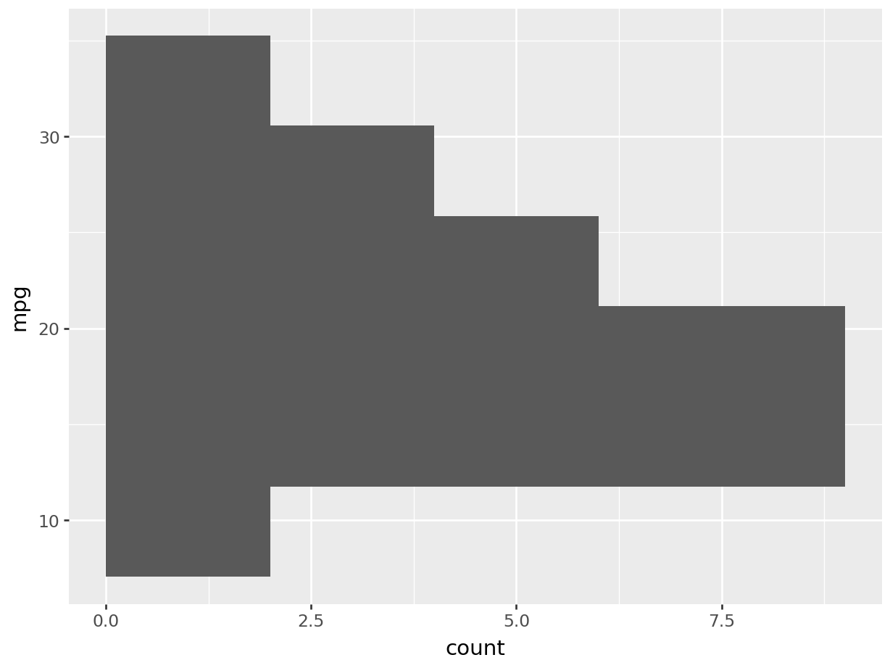
You can see by how changing the axis aesthetic, the histogram was mirrored over the axis.
Let’s see what happens now, if we swap the geom_histogram layer for a geom_boxplot:
R
ggplot(mtcars, aes(y=mpg)) +
geom_boxplot()
python
(
ggplot(mtcars, aes(y='mpg')) +
geom_boxplot()
)## <Figure Size: (640 x 480)>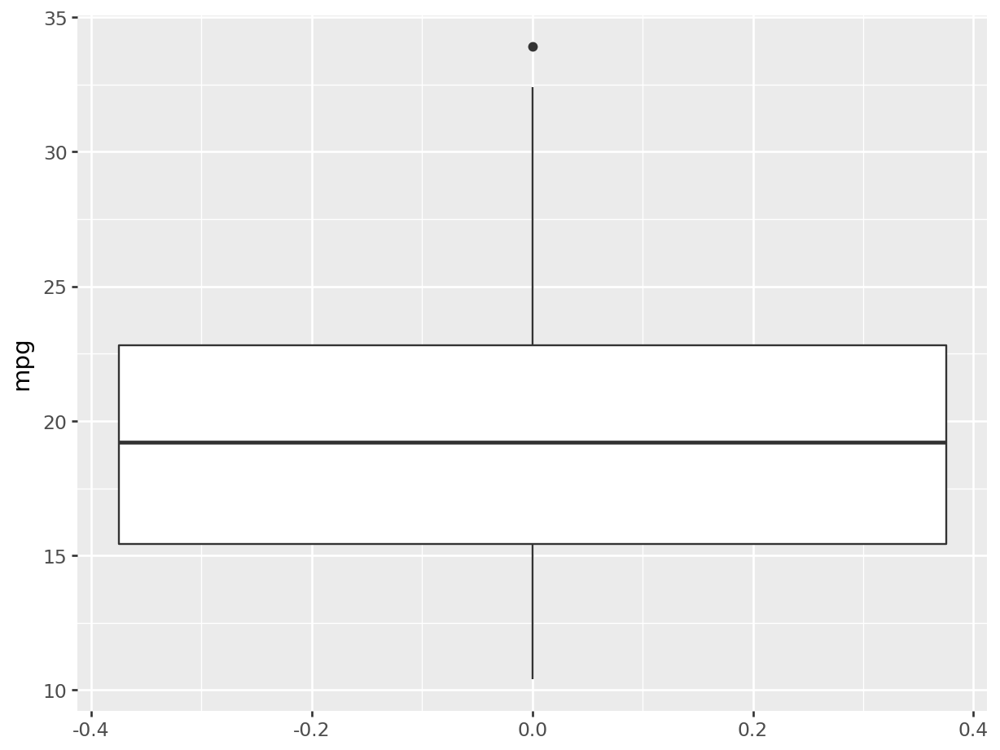
This will give us a complete different type of distribution plot, the boxplot! A boxplot is a very useful graphical representation of a variable’s distribution based on a five-number summary: the minimum, first quartile (Q1), median, third quartile (Q3), and maximum. The box represents the interquartile range (IQR), containing the middle 50% of the data, with a line indicating the median. The whiskers extend from the box to the minimum and maximum values, excluding outliers, which are represented as individual points. Boxplots are useful for understanding data distribution, detecting outliers, and comparing data sets. The boxplot has a common aesthetic with the histogram: in fact, it’s just a different way to represent a distribution! All we had to do was change the layer.
Funny enough, in ggplot, if we want, and they share aeshtetics, we can stack layers on top of each other just by adding more. For instance:
R
# R users, look at the output of python plot.
# We can make the same plot in R!
# Can you translate the python code to ggplot2?
ggplot(mtcars, aes(y=mpg)) +
geom_boxplot() +
geom_density()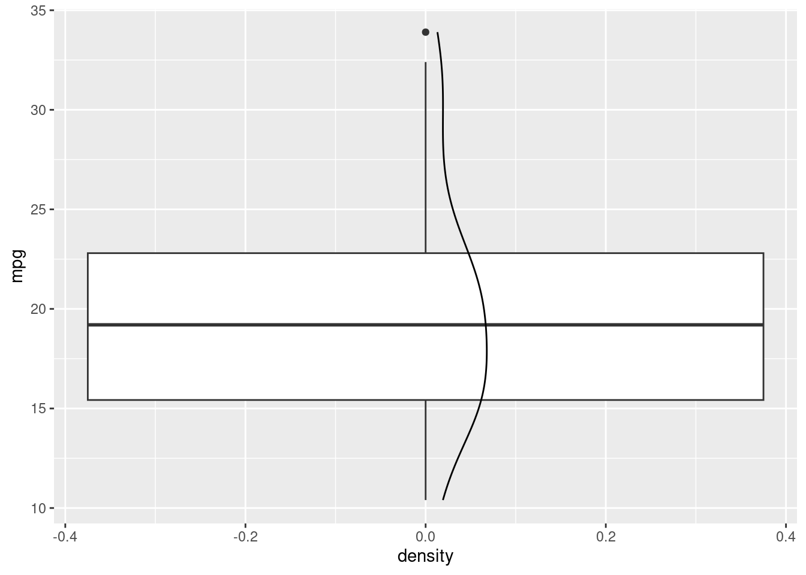
python
# the same plot in plotnine is not possible as
# the boxplot and the density plot have different aestethics.
# however, we can plot (this should work in R too):
(
ggplot(mtcars, aes(x="mpg")) +
geom_histogram(aes(y = "..density.."), binwidth=3) +
geom_density()
)## <Figure Size: (640 x 480)>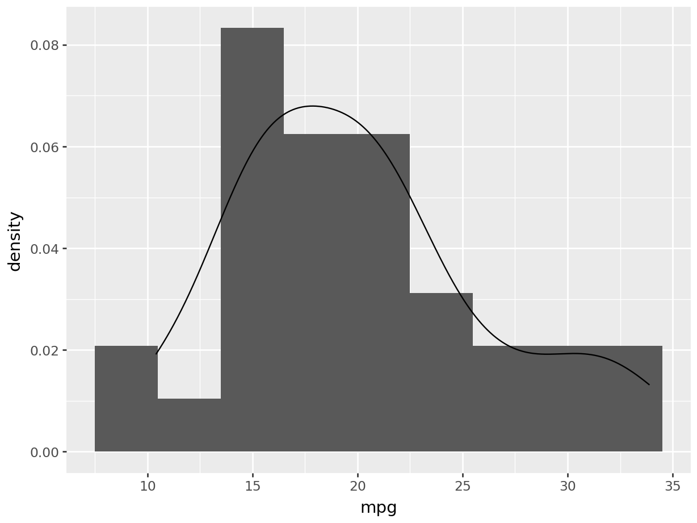
We have just added an estimate of our density to our boxplot/histogram!
5.2.1.2 Plotting multiple dimensions
A scatterplot uses two dimensions, allowing us to visualize the relationship between two variables.
So, our aestetic, now gets another argument: we have now both the x and the y!
Let’s create a scatterplot of mpg against hp (horsepower), to replicate our initial example.
R
ggplot(mtcars, aes(x=hp, y=mpg)) +
geom_point() # + theme_minimal()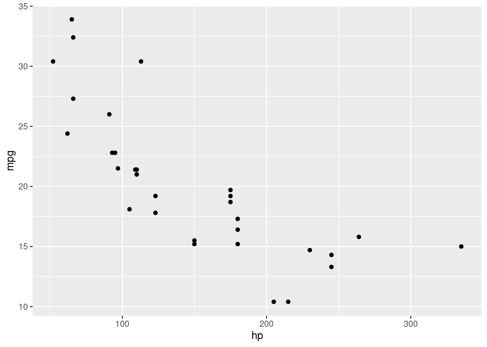
python
(
ggplot(mtcars, aes(x='hp', y='mpg')) +
geom_point() # + theme_minimal()
)## <Figure Size: (640 x 480)>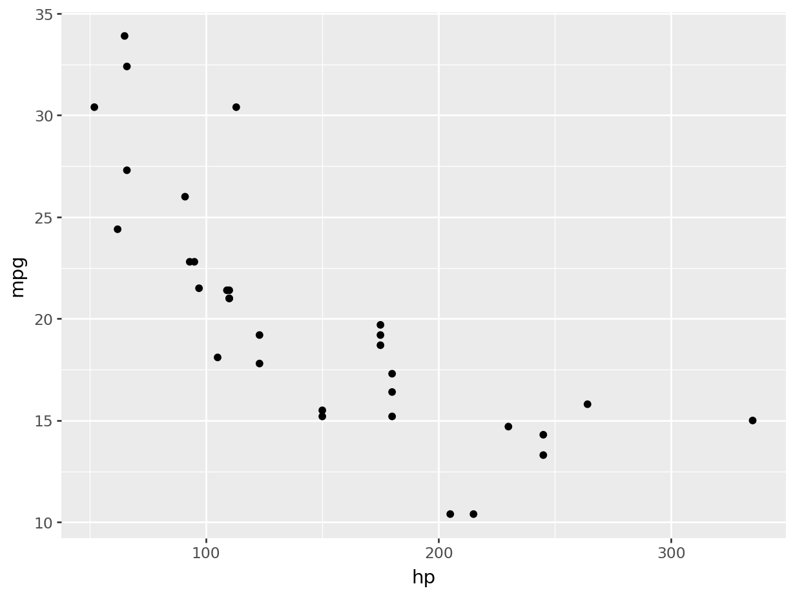
Uncomment the theme_minimal to add an additional theme to our plot, and you will have recreated the plot at the beginning of the section.
Representing higher dimentions.
Now, the cool stuff is that we can introduce higher dimensions by mapping additional variables to other aesthetics like color (or the point shape).
Let’s color the points in our scatterplot based on the type of transmission (am).
R
ggplot(mtcars, aes(x=hp, y=mpg, color=am)) +
geom_point()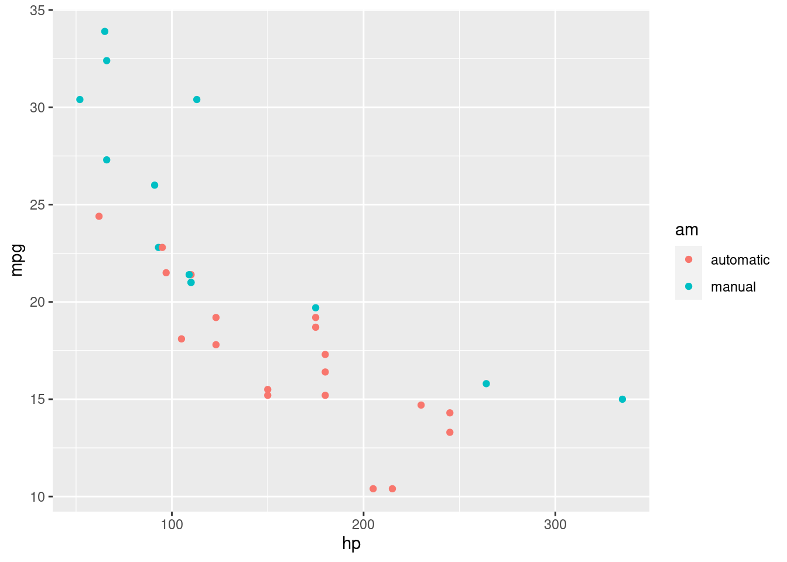
python
(
ggplot(mtcars, aes(x='hp', y='mpg', color='am')) +
geom_point()
)## <Figure Size: (640 x 480)>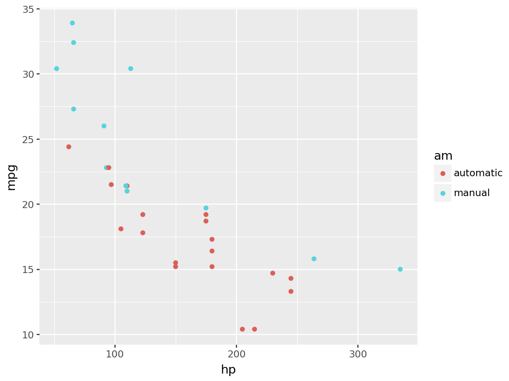
We can see graphically now why the mean consumption in the automatic transmission was higher in the example before! You can see that it’s separate.
Note that we can add as many dimensions as our layer allows it. For instance, to throw the engine type into the mix, I can change the shape of my points:
R
ggplot(mtcars, aes(x=hp, y=mpg, color=am, shape= vs)) +
geom_point()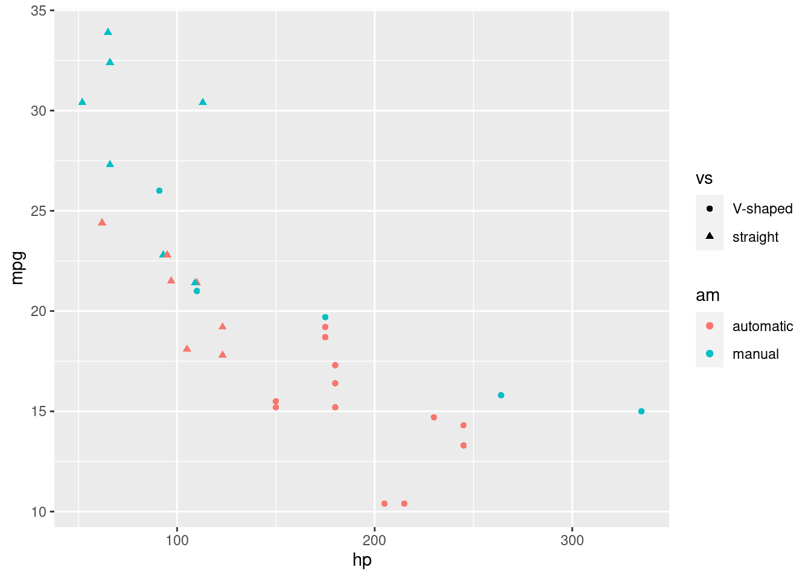
python
(
ggplot(mtcars, aes(x='hp', y='mpg', color='am', shape='vs')) +
geom_point()
)## <Figure Size: (640 x 480)>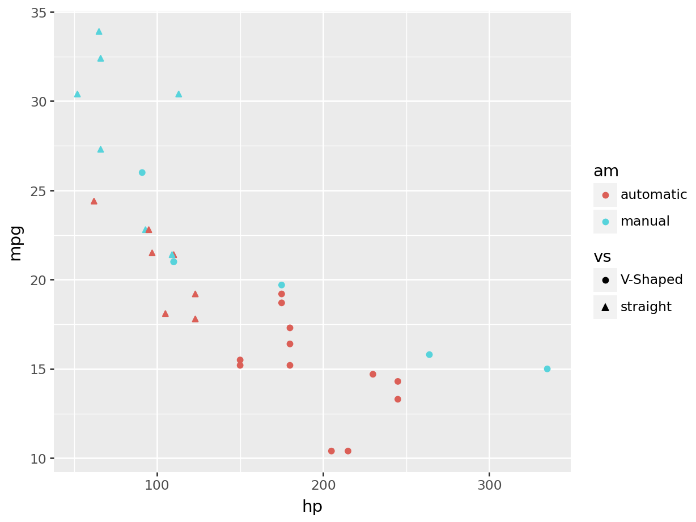
Or again, maybe we want a different visualization completely! As I can change the shape of my points, I can change the linetype of my boxplots:
R
ggplot(mtcars, aes(y=mpg, color=am, linetype = vs)) +
geom_boxplot()python
(
ggplot(mtcars, aes(y='mpg', color='am', linetype='vs')) +
geom_boxplot()
)## <Figure Size: (640 x 480)>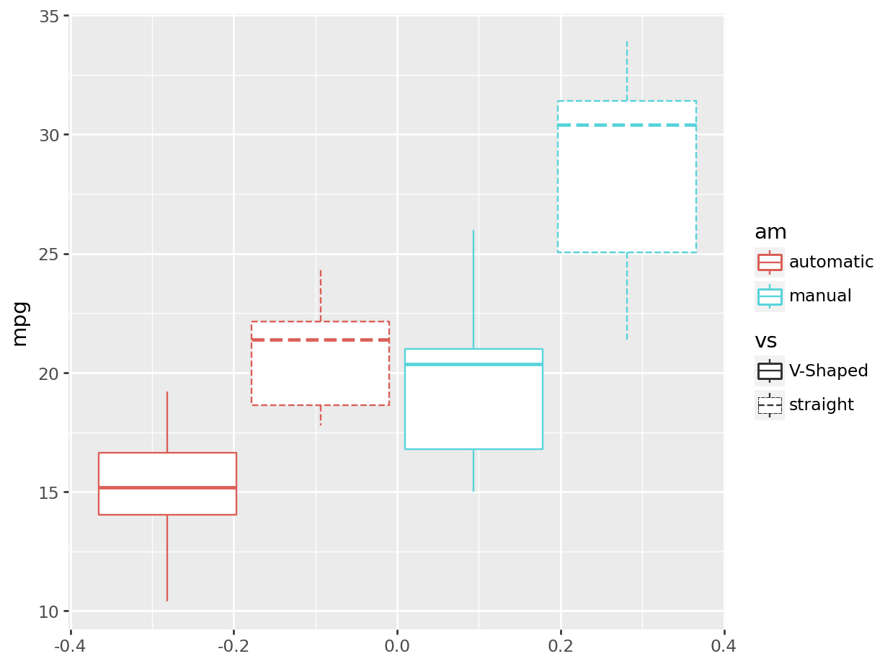
5.2.2 Advanced plots
This section will not be evaluated on the quizzes, however if you are feeling confident you should read it anyway as it shows how powerful ggplot can get. If you’re overwelmed, feel free to skip at the exercise, and complete up to the medium level.
In ggplot you can change a bunch of graphical characteristics very easily by just adding things. This is a very functional way of thinking of a plot, where we can concatenate (again, function compositions!) multiple graphical elements! Few things you can easily change include:
Themes: By adding themes you can use different themes to change the overall appearance of your plot. For example,
theme_minimal()gives a minimal theme with no background grid. Trytheme_bw()for a different one.Title: You can add or change the title of your plot by adding
ggtitle("Your Title").Labels: You can change the axis labels by adding
labs(x = "X Label Name", y = "Y Label Name").Limits: You can set the limits of your axes by adding
xlim(lower, upper)andylim(lower, upper).
Remember, you can concatenate all these things together one after the other in one single ggplot call:
R
ggplot(mtcars, aes(x=hp, y=mpg, color=am)) +
geom_point() +
ggtitle("Power Against Consumption") +
labs(x="Horse Power", y="Consumption (mpg)") +
xlim(0, 250) +
theme_bw()## Warning: Removed 2 rows containing missing values
## (`geom_point()`).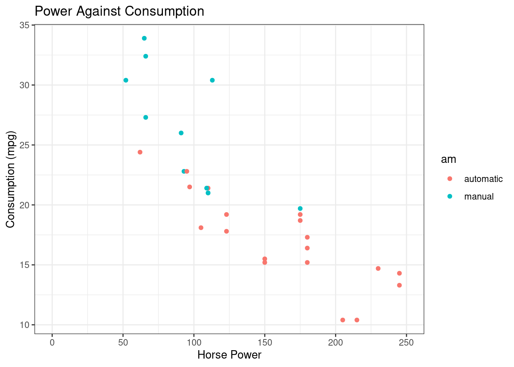
python
(
ggplot(mtcars, aes(x='hp', y='mpg', color='am')) +
geom_point() +
ggtitle("Power Against Consumption") +
labs(x="Horse Power", y="Consumption (mpg)") +
xlim(0, 250) +
theme_bw()
)## <Figure Size: (640 x 480)>
##
## /home/romano/Documents/EpiC/.venv/lib/python3.11/site-packages/plotnine/layer.py:364: PlotnineWarning: geom_point : Removed 2 rows containing missing values.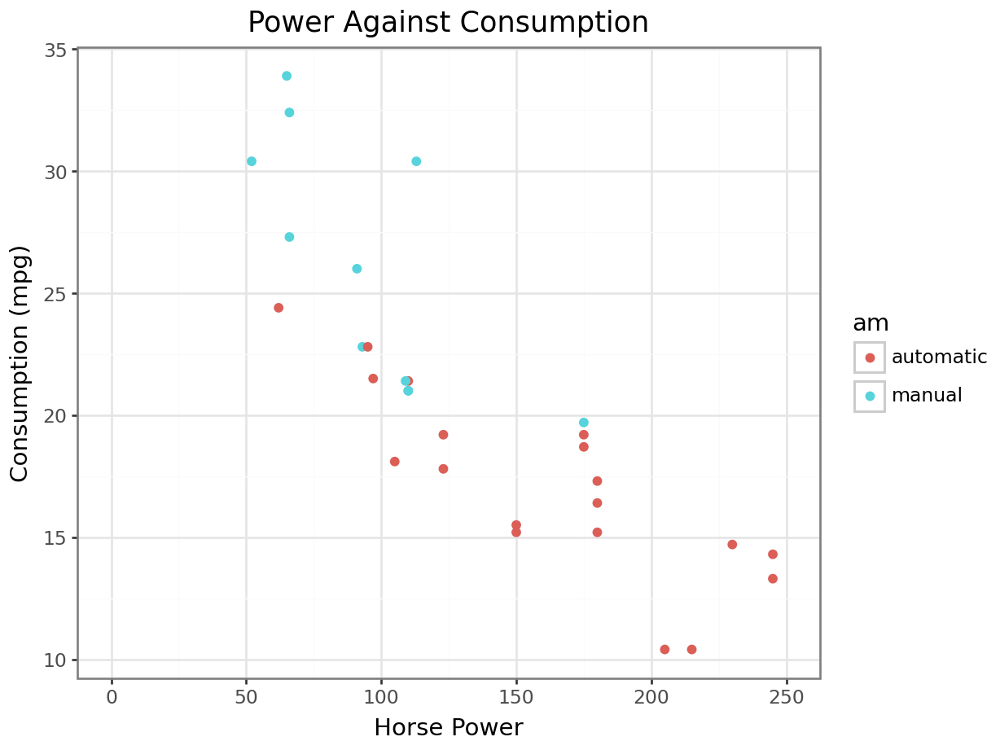
5.2.2.1 Multiple Plots with Facets
Faceting is a way to create multiple subplots at once based on an extra factor variable.
This is a very clean way of representing several variables, as the subplots will share the relevant axes.
For instance, let’s show the relationship between miles per gallon (mpg) and horsepower (hp), transmission type (am) but separated by the highest gear (gear):
R
ggplot(mtcars, aes(x=hp, y=mpg, color=am)) +
geom_point() +
facet_wrap(~gear)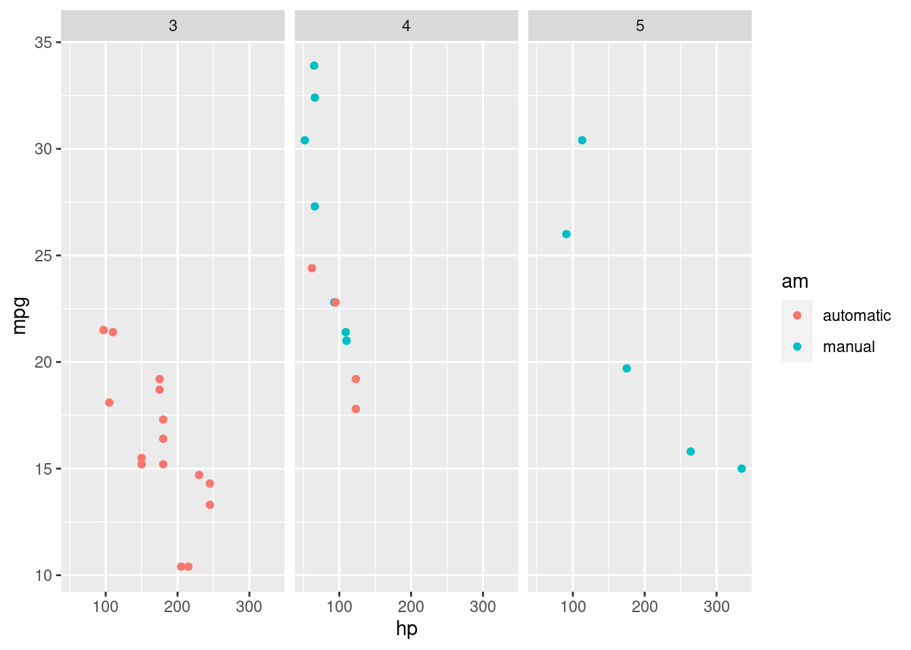
python
(
ggplot(mtcars, aes(x='hp', y='mpg', color='am')) +
geom_point() +
facet_wrap('~gear')
)## <Figure Size: (640 x 480)>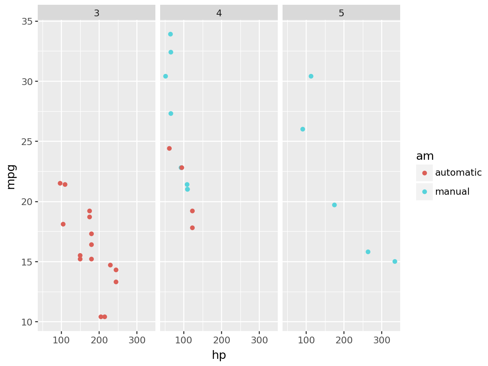
On your own, try what happens by adding the argument nrow=3 to the facet_wrap, e.g. facet_wrap(~gear, nrow=3).
5.2.2.2 Few extra layers
For completion, let’s see and explore some extra layers we can have.
R
# linegraph
# great for continuous time variables
ggplot(mtcars, aes(x=hp, y=disp, color=am)) +
geom_line()# recall we can always filter based on any type of
# variable, what we learned over the first half translates equally
# to the second! And the plot adapts magically.
ggplot(mtcars |> filter(am == "manual"),
aes(x=hp, y=disp)) +
geom_line()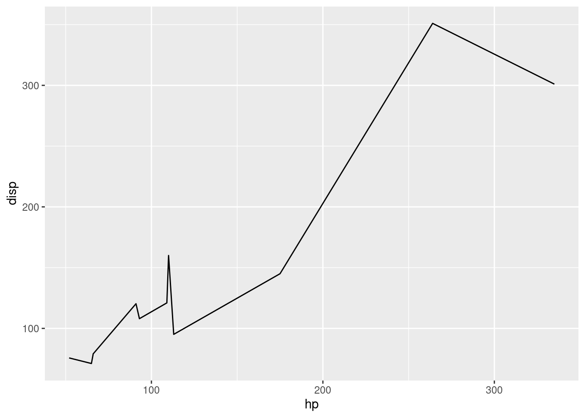
# barcharts
# great for categorical variables
ggplot(mtcars, aes(x=cyl, fill=am)) +
geom_bar()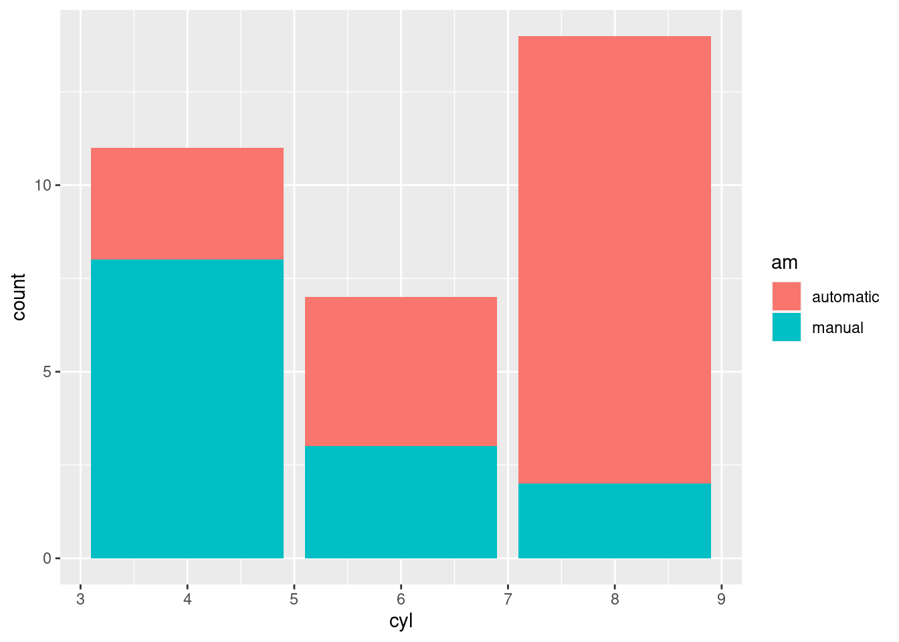
# we can store the plot in a variable and add more layers if
# needed
pt <- ggplot(mtcars, aes(x=cyl, fill=am)) +
geom_bar()
pt + facet_wrap(~vs)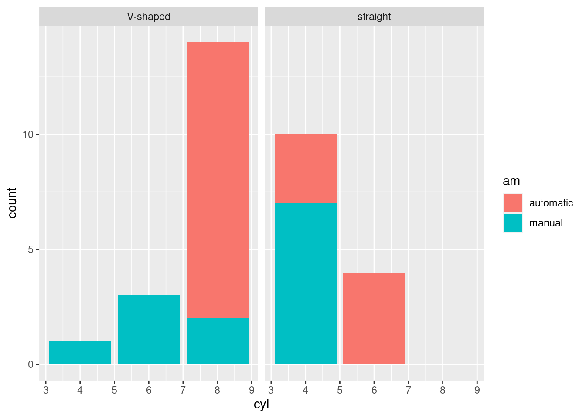
python
# linegraph
# great for continuous time variables
(
ggplot(mtcars, aes(x='hp', y='disp', color='am')) +
geom_line()
)## <Figure Size: (640 x 480)>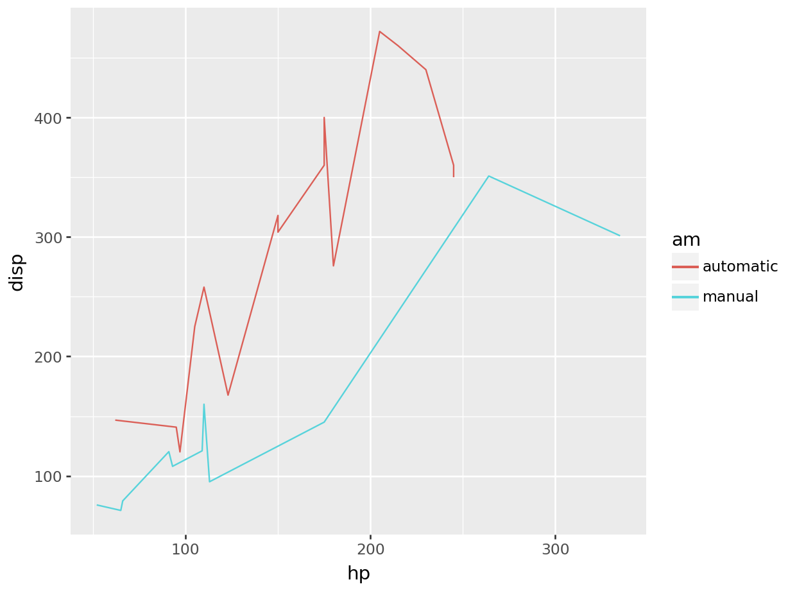
# recall we can always filter based on any type of
# variable, what we learned over the first half translates equally
# to the second! And the plot adapts magically.
(
ggplot(mtcars.query("am == 'manual'"),
aes(x='hp', y='disp')) +
geom_line()
)## <Figure Size: (640 x 480)>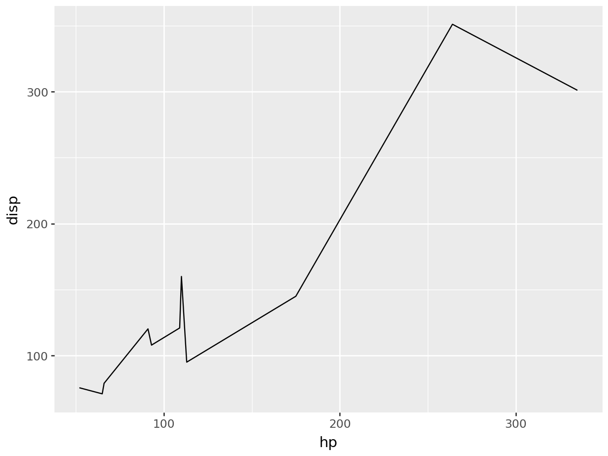
# barcharts
# great for categorical variables
(
ggplot(mtcars, aes(x='cyl', fill='am')) +
geom_bar()
)## <Figure Size: (640 x 480)>
# we can store the plot in a variable and add more layers if
# needed
pt = (ggplot(mtcars, aes(x='cyl', fill='am')) +
geom_bar())
pt + facet_wrap('~vs')## <Figure Size: (640 x 480)>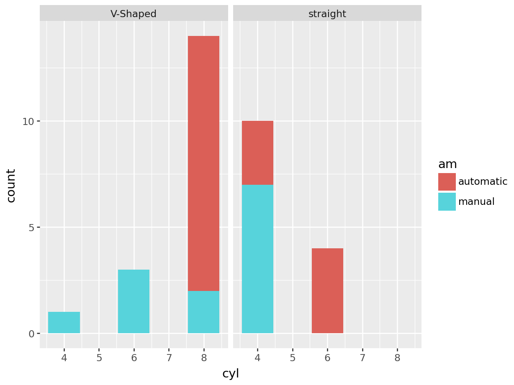
5.2.2.3 Saving and Exporting Plots
You can save your plots to a file in both R and Python. To do so, you will first need to assign the plot to a variable.
R
g <- ggplot(mtcars, aes(x=mpg, y=hp)) +
geom_point() +
theme_minimal()
ggsave("my_plot.png", g, width=6, height=4)python
g = (
ggplot(mtcars, aes(x='mpg', y='hp')) +
geom_point() +
theme_minimal()
)
g.save("my_plot.png", width=6, height=4)## /home/romano/Documents/EpiC/.venv/lib/python3.11/site-packages/plotnine/ggplot.py:587: PlotnineWarning: Saving 6 x 4 in image.
## /home/romano/Documents/EpiC/.venv/lib/python3.11/site-packages/plotnine/ggplot.py:588: PlotnineWarning: Filename: my_plot.pngThis will save the scatter plot as a PNG file named “plot.png”. You can change the filename to save it as a different type (like .jpg or .pdf) or to a different location as usual!.
5.2.3 Exercise: ggplots of periodic functions
In this exercises we will be plotting few sine and cosine waves. This should combine both knowledge of creating a data frame, and ggplot. The exercise has various levels of completition, from a basic level where we will be plotting a sine function from 1 to 10, to an advance level where we will be displaying multiple periodic functions.
Basic. Via ggplot, plot a sinusoidal function, \(y = \sin(x)\), from 0 to 10:
You want to create a sequence of numbers,
x, of at least 100 values ranging from 0 to 10.You then want to run the sine function on this sequence to get the
yStore the results of this operation in a data frame
Plot a line using ggplot’s
geom_line().
Medium. Modify the code above to add the additional function \(y=\cos(x)\). You should get something like:

The x-axis should range from 0 to 10, with a step size of 0.01.
Use different colours for each curve (sine or cosine)
How many columns should have your dataframe?
Advanced. Using ggplot, write a program that generates the plot below:
Each subplot should be comparing sines and cosines with different frequencies. The plot should show 6 sinusoidal functions:\[\sin\left(\frac{x}{2}\right), \sin(x), \sin(2x), \cos\left(\frac{x}{2}\right), \cos(x), \cos(2x)\]
The plot should have three subplots, one for each frequency (\(\frac{1}{2}\), 1, and 2). Each subplot should contain both the sine and cosine functions, as above
Avoid computing everything by hand (e.g. copy pasting the dataframe code 6 times) or
forloop. TIP: Usemapto generate your dataframes andreduceto combine them. Use lambda functions where necessary.